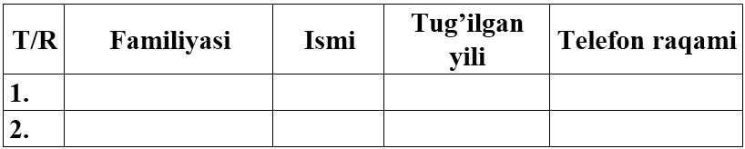

1. MS Access 2010 ni quyidagi usullardan foydalanib ishga tushiring:
• foydalanuvchining ish stolidagi yorliq yordamida;
• MS Access Access 2010 ning yorliq belgisi yordamida;
• bosh menyu yordamida.
2. MS Excel 2010 da quydagi jadvalni hosil qiling:

3. Hosil qilingan jadvalni MS Access 2010 dasturiga import qiling.
4. MS Access 2010 da yaratilgan faylni yuklang va uni MS Excel 2010 ga eksport qiling.
5. MS Access 2010 ning Файл, Главная, Создание, Внешние данные, Работа с базами данных, Поля, Таблица menyusining imkoniyatlarini tushuntirib bering.
6. MS Access 2010 ning maydon xossalarini o’zgartiring.
7. MS Access 2010 ning maydon turlarini o’zgartiring.
8. Quyidagi jadvaldan foydalangan holda MO jadvalining maydonlarini hosil qiling:
9. MS Access 2010 ni Файл-Открыть ketma-ketligi orqali MS Access 2010 da yaratilgan bironta faylni yuklang.